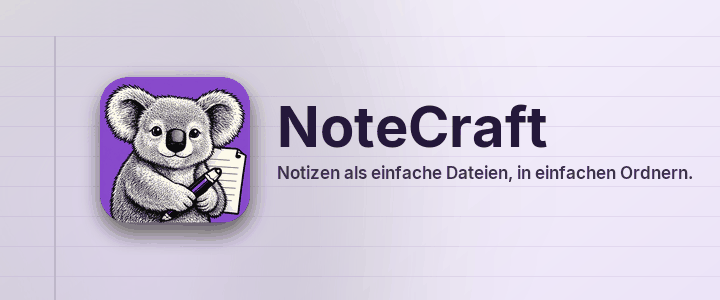

Notizen als einfache Dateien, in einfachen Ordnern.
NoteCraft bewahrt Notizen so auf, wie Sie Dateien aufbewahren: Ein Notizbuch ist ein Ordner, ein Abschnitt ist ein Ordner, eine Seite ist ein Ordner mit einer Datei und ihren Bildern darin. Nichts ist in einer Datenbank eingeschlossen, also wird jeder Ordner, den Ihr Synchronisierungsdienst schon beobachtet, zu einem synchronisierten Notizbuch, und eine Sicherung ist eine Kopie.
Jede Seite in diesem Abschnitt zeigt einen Teil von NoteCraft, auf der Seite selbst:
Klicken Sie irgendwo in diesen Absatz und tippen Sie. Die Seite speichert sich etwa eine Sekunde nachdem Sie aufhören von selbst. Drücken Sie am Zeilenende Eingabe für einen neuen Absatz und Esc, um die Zeile zu verlassen.
Zurück zur Startseite.
Diese Seite wurde von einem KI-Modell übersetzt. Korrekturen sind willkommen.